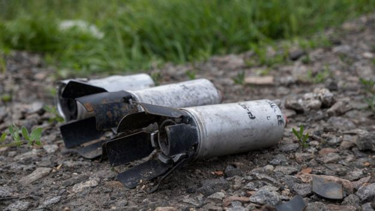
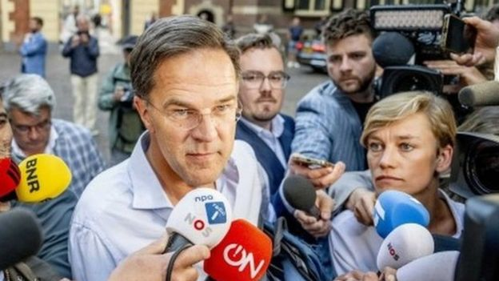
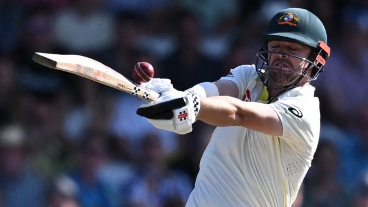
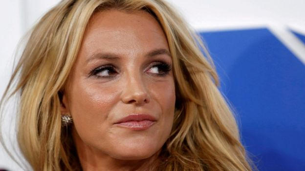
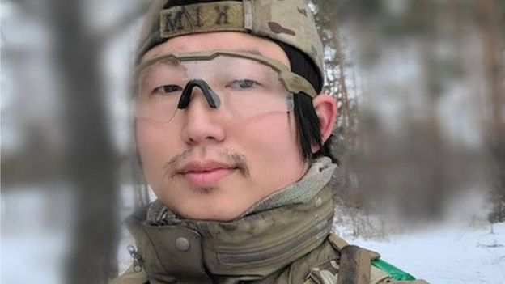

Why is US giving Ukraine'abhorrent'weapons?EUROPE |

Dutch government collapses over asylum rowEUROPE |

Ashes nwes: Build-up to crucial of third England-Australia TestCRICKET |
Can France prevent tensions igniting again?EUROPE |
|

No charges for security who blocked Britney Spears The pop star says the incident near a restaurant in Las Vegas was a "traumatic experience". US & CANADA |

BBC visits Belarus camp offered to Wagner Russia editor Steve Rosenberg says that, so far, only Belarusian troops appear to be on the site. EUROPE |

Pressure builds on S Korea to send Ukraine stockpiled ammo Seoul is sitting on one of the world/s biggest ammunition stockpiles but is reluctant to give it away. ASIA |